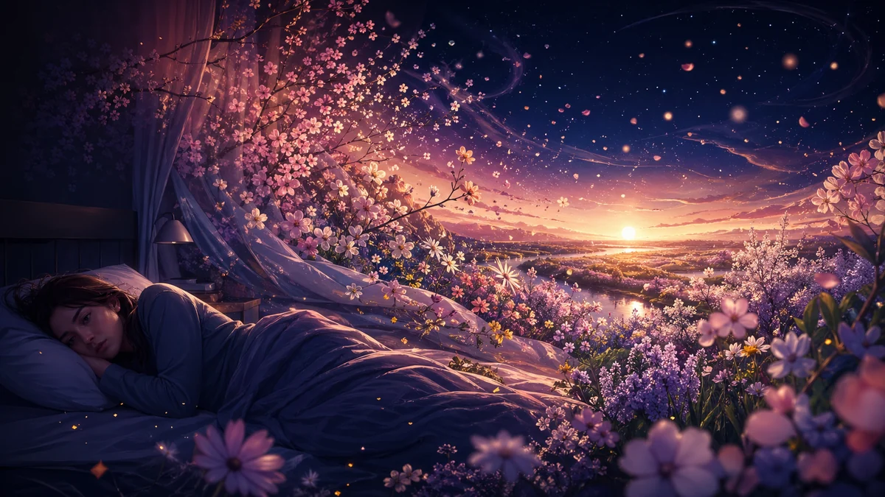

Schlafstörung im Frühling: Wie längere Tage Ihren Schlaf und Ihre Träume verändern
Mehr Licht, mildere Temperaturen, ein Gefühl der Erneuerung: Der Frühling verspricht Energie. Doch für Millionen von Menschen bedeutet der Frühlingsübergang schwierigere Nächte, unerklärliche Müdigkeit und Träume, die ihren Charakter verändern. Längere Tage lösen eine Kaskade biologischer Anpassungen aus, und Ihre innere Uhr braucht Zeit, das zu verarbeiten. Hier erfahren Sie, wie die Frühlings-Tagundnachtgleiche den Schlaf beeinflusst, warum Melatonin mit dem neuen Licht in Konflikt gerät und wie Ihre Träume diese saisonale Transformation widerspiegeln.
Dieser Artikel dient ausschließlich zu Informationszwecken und stellt keine medizinische Beratung dar. Konsultieren Sie bei schlafbezogenen Beschwerden einen Arzt.
Kurze Antwort
Der Frühling verlängert die Tage abrupt, was die abendliche Melatoninproduktion unterdrückt und den Nucleus suprachiasmaticus, Ihre zentrale biologische Uhr, zur Neukalibrierung zwingt. Diese Desynchronisation erzeugt die Frühjahrmüdigkeit (die etwa jeden dritten Europäer betrifft), verändert die Schlafarchitektur und beeinflusst Intensität und Inhalt der Träume. Lichtmanagement, ein konsistenter Schlafrhythmus und das Führen eines Traumtagebuchs sind die Schlüssel, um diesen Übergang ohne Qualitätsverlust im Schlaf zu meistern.

Der Äquinoktium-Effekt
Am Tag der Frühlings-Tagundnachtgleiche sind Tag und Nacht ungefähr gleich lang. Entscheidend ist aber nicht dieser Moment des Gleichgewichts, sondern was danach kommt: eine beschleunigte Zunahme der Fotoperiode, die in mitteleuropäischen Breiten täglich 3 bis 4 Minuten Tageslicht hinzufügt. In nur sechs Wochen wird der Tag um mehr als zwei Stunden länger.
Für das Gehirn ist diese Veränderung alles andere als schrittweise. Der Nucleus suprachiasmaticus (SCN), die Meisteruhr im Hypothalamus, braucht das Lichtsignal, um die zirkadianen Rhythmen mit dem 24-Stunden-Zyklus zu synchronisieren. Ändert sich die Fotoperiode so schnell wie beim Frühlingsübergang, muss sich der SCN neu kalibrieren. Er bezieht seine Informationen von intrinsisch lichtempfindlichen retinalen Ganglienzellen — spezialisierten Neuronen, die Umgebungslicht erfassen und direkt an die biologische Uhr weiterleiten. Dieser Anpassungsprozess geschieht nicht sofort.
Studien zeigen, dass der SCN 1 bis 3 Wochen braucht, um sich auf die neue Fotoperiode einzustellen. Während dieser Übergangsphase arbeitet Ihr Körper mit einer leicht verstellten Uhr im Verhältnis zu den Umgebungssignalen — eine subtile Form von saisonalem Jetlag entsteht. Das Ergebnis: Einschlafprobleme, verfrühtes Erwachen und eine Tagesmüdigkeit, die der Energie zu widersprechen scheint, die der Frühling bringen sollte.
Melatonin unter Druck
Abendlicht als Störfaktor
Melatonin, das Hormon, das dem Körper signalisiert, dass es Zeit zum Schlafen ist, reagiert extrem empfindlich auf Licht. Normalerweise beginnt die Zirbeldrüse 1 bis 2 Stunden vor der üblichen Schlafenszeit mit der Ausschüttung, sobald das Umgebungslicht abnimmt. Im Winter lässt der frühe Sonnenuntergang diesen Prozess ungestört anlaufen. Im Frühling verschieben sich die Sonnenuntergänge jedoch zunehmend nach hinten, und Abendlicht dringt in die Stunden ein, in denen das Melatonin ansteigen sollte.
Fotoperiodensstudien belegen: Selbst eine moderate Exposition gegenüber Abendlicht — etwa ein verlängerter Sonnenuntergang, der das Haus flutet — kann die Melatoninproduktion um 50 % oder mehr unterdrücken. Ihr Körper empfängt das Signal «es ist noch Tag», obwohl Sie Nacht brauchen. Das erhöht die Schlaflatenz: Sie brauchen länger zum Einschlafen, trotz derselben Müdigkeit wie im Winter.
Morgenlicht als Taktgeber
Abendlicht verzögert die Uhr — Morgenlicht beschleunigt sie. Der frühere Frühlingssonnenaufgang sendet ein starkes Signal an den SCN: «Der Tag hat begonnen». Er unterdrückt das verbliebene Melatonin und aktiviert die Cortisol-Wachheitspfade. Wer mit leichten Vorhängen oder nach Osten ausgerichteten Schlafzimmern schläft, wacht oft 30 bis 60 Minuten vor dem Wecker auf, ohne dass der Schlafzyklus abgeschlossen wurde. Ein doppelter Druck: Sie gehen später ins Bett und wachen früher auf.
«Die Frühlingsfotoperiode verkürzt das Melatoninfenster an beiden Enden: Das Abendlicht verzögert den Beginn und das Morgenlicht beschleunigt die Unterdrückung. Das Ergebnis ist eine Kompression der biologischen Nacht.» — Wehr et al., Archives of General Psychiatry
Frühjahrmüdigkeit
Ein wissenschaftlich anerkanntes Phänomen
In der mitteleuropäischen Medizin gilt Frühjahrmüdigkeit als fest etabliertes Konzept. Etwa jeder dritte Europäer spürt sie: anhaltende Erschöpfung, Reizbarkeit, Konzentrationsschwierigkeiten und Tagschläfrigkeit in den Wochen nach der Tagundnachtgleiche. Bloße Trägheit ist das nicht — es ist eine direkte physiologische Folge der zirkadianen Neukalibrierung.
Dahinter steckt eine hormonelle Kaskade. Im Winter hält der Körper relativ erhöhte Tagesspiegel von Melatonin und moderate Serotoninspiegel aufrecht. Mit dem Frühling kehrt sich dieses Verhältnis rasch um: Serotonin steigt, stimuliert durch Licht, doch das System braucht Wochen, um die Melatoninproduktion an ihr neues saisonales Muster anzupassen. In der Zwischenzeit arbeitet der Organismus in einem hormonellen Übergangszustand, der Energie verbraucht und die Schlafeffizienz mindert.
Verschlimmernde Faktoren
Verstärkt wird die Frühjahrmüdigkeit durch Faktoren, die oft unbemerkt bleiben. Temperaturveränderungen aktivieren die periphere Vasodilatation, was den Blutdruck leicht senkt und zur Schläfrigkeit beiträgt. Saisonale Allergien bringen systemische Entzündungen und Schlaffragmentierung durch verstopfte Nase mit sich. Und wer die hellen Abende für Aktivitäten im Freien nutzt, verschiebt die Schlafenszeit weiter nach hinten und vergrößert die Schlafschuld.
Traumqualität im Frühling
Umverteilung des REM-Schlafs
Wird die biologische Nacht komprimiert, verändert sich die Schlafarchitektur direkt. Die längsten REM-Schlafphasen mit den lebhaftesten Träumen konzentrieren sich im letzten Drittel der Nacht — genau die Stunden, die der frühe Sonnenaufgang abschneidet. Weckt Morgenlicht Sie, bevor Ihr letzter REM-Zyklus abgeschlossen ist, verlieren Sie den Schlafabschnitt mit der höchsten Traumdichte.
Kampflos gibt das Gehirn seine Träume aber nicht auf. Wie bei Schlafentzug kann der frühlingsbedingte REM-Verlust einen kompensatorischen REM-Rebound auslösen: Das Gehirn intensiviert die verbleibenden REM-Phasen und erzeugt in kürzerer Zeit dichtere, lebhaftere und emotional aufgeladenere Träume. Genau deshalb berichten viele Menschen zu Beginn des Frühlings von besonders intensiven Träumen.
Saisonale Muster im Trauminhalt
Saisonale Traummuster-Studien zeigen: Frühlingsträume enthalten tendenziell mehr Bilder von Bewegung, Verwandlung und Natur als die anderer Jahreszeiten. Themen wie Wiedergeburt, Wachstum und Veränderung treten häufiger auf — möglicherweise eine Widerspiegelung der Reaktion des Gehirns auf Umweltsignale der Erneuerung. Selbst nächtliche Szenen in Frühlingsträumen wirken oft heller, als ob die Zunahme des Tageslichts in die Traumlandschaft einsickert.
Erleben Sie während dieses Übergangs beunruhigende Träume, ist das kein Grund zur Sorge. Die Traumintensivierung ist eine normale Reaktion des Gehirns auf die zirkadiane Neukalibrierung. Sie deutet nicht auf ein psychisches Problem hin, sondern auf ein Schlafsystem, das sich aktiv an die neue Fotoperiode anpasst.
Anpassungsstrategien
Lichtmanagement
Ihr wichtigstes Werkzeug für einen reibungslosen Frühlingsübergang ist Licht. Setzen Sie sich morgens 20 bis 30 Minuten nach dem Aufwachen hellem natürlichem Licht aus. Ein Morgenspaziergang liefert etwa 10.000 Lux — das stärkste Signal, um Ihre zirkadiane Phase vorzuziehen und Ihre Uhr mit der neuen Fotoperiode zu synchronisieren. Abends machen Sie das Gegenteil: Dimmen Sie die Beleuchtung 90 Minuten vor dem Schlafengehen, verwenden Sie warmweiße Lampen (2.700K oder weniger) und installieren Sie Verdunklungsvorhänge gegen das Morgenlicht.
Konsistenter Schlafrhythmus
Widerstehen Sie der Versuchung, deutlich später ins Bett zu gehen, nur weil es noch hell ist. Eine konstante Einschlaf- und Aufwachzeit — auch am Wochenende — bildet die Grundlage für eine sanfte Anpassung. Müssen Sie Ihren Zeitplan ändern, tun Sie es in 15-Minuten-Schritten pro Tag, nicht abrupt. Ihr SCN passt sich an kleine, progressive Änderungen besser an als an plötzliche Sprünge.
Bewegung und Temperatur
Bewegen Sie sich moderat am Morgen oder frühen Nachmittag — das verstärkt das zirkadiane Tagessignal und verbessert den homöostatischen Schlafdruck für die Nacht. Vermeiden Sie intensives Training in den 3 bis 4 Stunden vor dem Schlafengehen: Es erhöht die Kernkörpertemperatur und verzögert das Einschlafen. Auch die Schlafzimmertemperatur bleibt entscheidend: Halten Sie den Raum zwischen 18 und 20 °C, selbst wenn die Frühlingsnächte milder werden.
Traumtagebuch während des Übergangs
Ein Barometer Ihrer zirkadianen Anpassung
Während des Frühlingsübergangs ein Traumtagebuch zu führen ist mehr als Selbsterkenntnis: Es hilft Ihnen, Ihre zirkadiane Gesundheit zu überwachen. Veränderungen in der Lebhaftigkeit, Emotionalität und dem Inhalt Ihrer Träume spiegeln direkt wider, wie Ihr Gehirn die neue Fotoperiode verarbeitet. Steigt die Traumintensität plötzlich an, kann das auf einen REM-Rebound hinweisen — ein Signal, dass Ihr Schlaf durch das neue Licht komprimiert wird.
Sprechen Sie Ihre Träume direkt nach dem Aufwachen ein, bevor die Details verblassen. So halten Sie Nuancen fest, die eine abendliche schriftliche Aufzeichnung verlieren würde. Vergleichen Sie Ihre Traummuster von Februar mit denen von April — Sie werden den genauen Abdruck des saisonalen Übergangs in Ihrer Schlafarchitektur erkennen.
Muster, auf die Sie achten sollten
Beim Aufzeichnen Ihrer Frühlingsträume lohnt sich ein Blick auf drei Punkte: die Häufigkeit lebhafter Träume (ein Marker für REM-Druck), Themen rund um Licht und Dunkelheit (die die zirkadiane Empfindlichkeit widerspiegeln) und die allgemeine emotionale Intensität (die sich während der Neukalibrierung erhöhen kann). Stellen Sie ein Muster zunehmend beunruhigender Träume in Verbindung mit Tagesmüdigkeit fest, verstärken Sie Ihre Schlafhygiene oder konsultieren Sie einen Fachmann.
Noctalia erleichtert diese Beobachtung: Halten Sie Träume per Spracheingabe direkt nach dem Aufwachen fest. Die KI-Analyse identifiziert wiederkehrende Themen und emotionale Veränderungen über die Wochen — so werden Sie zum informierten Beobachter Ihres eigenen saisonalen Übergangs.
Häufig gestellte Fragen
Warum fällt das Einschlafen im Frühling schwerer?
Im Frühling verzögert die rasche Zunahme der Fotoperiode die Melatoninausschüttung, da das Abendlicht länger anhält. Der Nucleus suprachiasmaticus braucht Zeit zur Neukalibrierung, was eine Diskrepanz zwischen Ihrer biologischen Uhr und dem Licht-Dunkel-Zyklus erzeugt. Diese Desynchronisation führt zu Einschlafproblemen, früherem Erwachen und der Frühjahrmüdigkeit, die etwa jeden dritten Europäer betrifft.
Verändert der Frühling die Traumqualität?
Ja. Die Veränderungen der Schlafarchitektur im Frühling, insbesondere die Umverteilung des REM-Schlafs, verändern das Traumerlebnis. Viele Menschen berichten während des Frühlingsumbruchs von lebhafteren und emotional intensiveren Träumen, häufig mit Themen rund um Licht, Bewegung und Verwandlung, die die zirkadiane Neukalibrierung des Gehirns widerspiegeln.
Welche Strategien helfen, den Schlaf an den Jahreszeitenwechsel anzupassen?
Die wirksamsten Strategien umfassen Lichtmanagement (helles Morgenlicht, abendliche Dunkelheit), einen konsistenten Schlafrhythmus, Bewegung am Morgen oder frühen Nachmittag sowie das Führen eines Traumtagebuchs, um zu erkennen, wie der saisonale Übergang Ihren Schlaf und Ihr Traumleben beeinflusst.
Quellen / Weiterführende Literatur
- Wehr et al. (1998): Effect of photoperiod on the human circadian pacemaker (Archives of General Psychiatry)
- Roenneberg et al. (2019): Why should we abolish daylight saving time? (Journal of Biological Rhythms)
- Kantermann et al. (2007): The human circadian clock's seasonal adjustment is disrupted by daylight saving time (Current Biology)
- Stothard et al. (2017): Circadian entrainment to the natural light-dark cycle across seasons (Journal of Pineal Research)
- Harrison (2013): The impact of daylight saving time on sleep and related behaviours (Sleep Medicine Reviews)
Zuletzt aktualisiert: 24. März 2026
Verwandte Traumsymbole entdecken
Vertiefen Sie die Symbole aus diesem Artikel:
Als Nächstes lesen
Weitere Ressourcen zum gleichen Thema
Zeitumstellung und Schlaf: Wie der Uhrzeitwechsel Ihre Träume stört
Wie die Umstellung auf Sommerzeit Ihren zirkadianen Rhythmus und Ihre Traummuster beeinflusst.
GesundheitSchlafschuld und chronischer Schlafmangel: Auswirkungen auf Gesundheit und Träume
Was Schlafschuld ist, wie sie sich aufbaut und Strategien für erholsamen Schlaf.
RatgeberTräume erinnern: Praktische Tipps
Wissenschaftlich fundierte Techniken, um Ihre Traumerinnerung ab heute Nacht zu verbessern.